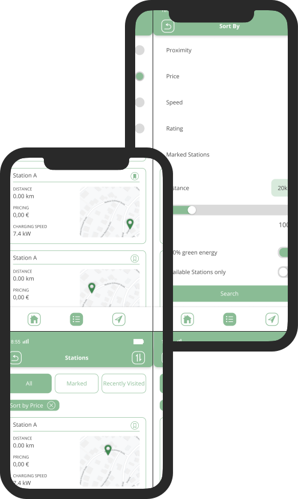
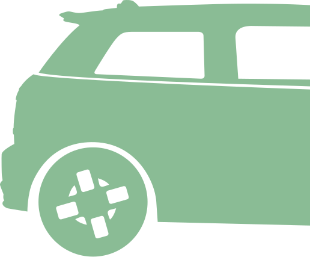

Our Vision
Charging an electric vehicle takes much longer than fueling up a regular combustion engine car. To
counter this problem we have developed an app to help you plan the charging process of your car.
With ECharge we want to give you an intuitive overview of all electric charging stations in your
area and make it as easy as possible to book one.
The usage of car data delivered by Caruso is perhaps its greated advantage. Information such as the
battery status, your car's location or prices and locations of charging stations are accessible with
just one click. The main focus of the app is an effortless user experience. We want you to be able
to book as quickly as possible and navigate through the app without any complications.
Need a charge?
The app is designed around the home screen. Here you can view all necessary information you need,
such as the car's battery status,
a small map with your location and the current range of your car.
The home screen acts as a starting point from which you can start looking for and booking a station
or get more information about your car.
With the navbar you can jump to the map or the list to start looking for charging stations.
The map is most useful when your are looking for a station in your area whereas the list gives you
more information and provides you with
an opportunity to sort the stations after specific categories.
Search by map ...
... or by list
Every user has different priorities and needs. We provide you with the opportunity to personalize your experience. You can sort by price, but if you are in a hurry you can also sort by charging speed. If you feel extra eco-friendly, you can search for stations that offer green energy as well!
In-App booking available!

The architecture behind our App
The system is divided into three parts. These are the subsystems that are typical for web applications, namely a frontend, a backend, and a database. This separation takes workload off the user’s computer, makes for easier testing of the application and ensures that data is securely stored. The architecture of the system is loosely based on the MVC design pattern. Different system parts in the backend represent the model and controller. The view is implemented in the front end.
Tech & Framework
In the frontend contemporary languages HTML and CSS are used along with functionalities provided by the framework Ionic to implement the user interface. The underlying logic is implemented using TypeScript and the framework Angular. The maps are implemented using features offered by the Leaflet, MapTiler and OpenRouteService APIs. In the backend Java 8 is used to implement the system’s main logic along with the framework Spring Boot. A MySQL database is used to store all data regarding charging stations as well as user data.
The Process
Team Innovationville works according to a modified Scrum process. There is no Scrum Master and the role of Product Owner is fullfilled by the team and their contact person from Caruso.
The Sprint: A sprint is one week long and starts on Tuesday at 3pm and ends on the following Tuesday at the same time.
Sprint Planning Meeting: The Sprint Planning Meeting is every Tuesday at 3pm and takes two hours. During this meeting the team discusses what needs to be done and how they want to achieve it.
Daily Scrum: Every day at 9am the team meets in a Discord voice chat to discuss what they did yesterday, what they are planning on doing today and what problems they encountered.
Sprint Retrospective: Every Tuesday at 2:30pm the team reflects on the last Sprint for 30 minutes.
Sprint Review: Every Wednesday at 10am the team presents their product increment. Every Tuesday at 5pm the next steps are discussed with the team's contact person to ensure the quality of the product.